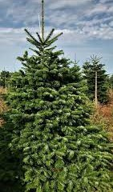

Norway Fir
Choosing And Buying Your Tree
The type of tree you need depends on the style you like, how long you want it to last for and how much you want to pay. You can pick a Norway Spruce or a Fir tree growing in the ground, label it and return nearer the time to collect. A Norway Spruce can be supplied potted, rootballed or cut whilst a Fir will need to be cut (because of its extensive root system). Although we regularly stock trees up to about 12 foot, if you require anything larger please let us know as we will get larger trees to order from our other plantations. Measure the height of your room and work out how tall you need the tree to be. You do not want a tiny tree that looks lost in a high-ceilinged room or to end up having to chop a bit off the top off it. You would be surprised how often that happens!
Is this the tree for you?
Firs are distinguished from other pines by needle-like leaves that attach singly to the branches. This is in contrast to spruce trees, which have paired needles with a hinge-like base, and pine needles, which are bunched in clusters. Fir trees are also distinguished by cones that stand upright on the branches like candles. Fir tree cones are softer than other cones of coniferous trees, and they come apart at the end of the season to spread their seeds.